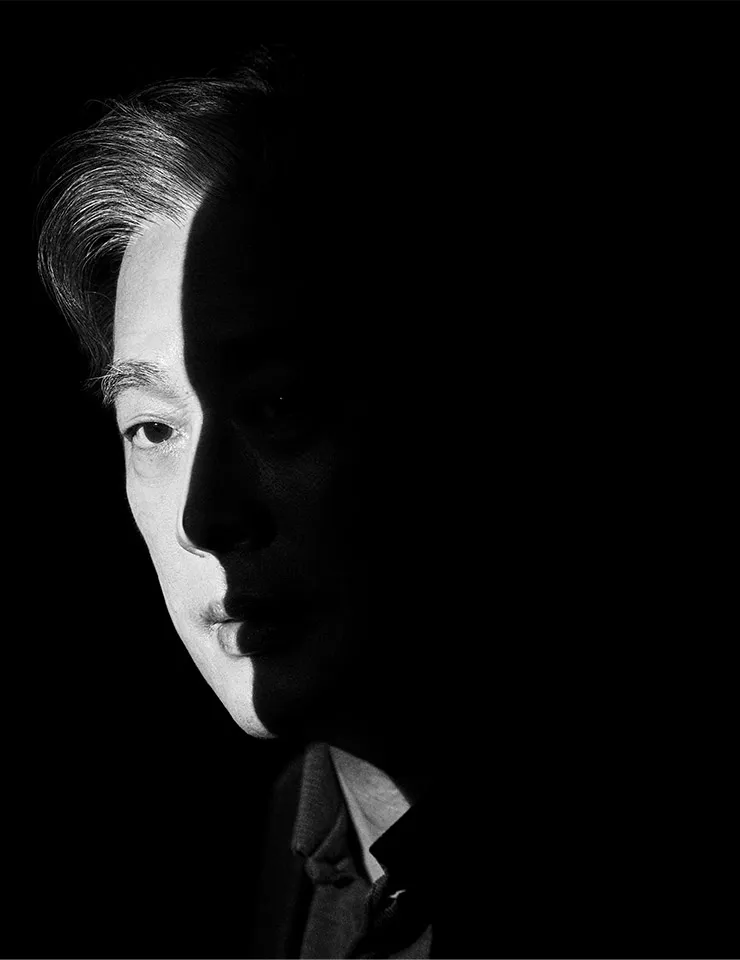

잔혹한 상황 표현과 폭력, 위태로운 개인의 극단적인 선택이라는 키워드로 설명할 수 있다. 또한, 상당히 과감한 폭력과 성적 묘사,
평범하거나 위태로운 위기에 처한 개인이 외부의 폭력으로 인해 저지른 죄에 대한 속죄 및 갈망이 매 작품마다 드러나는 편이다.

박찬욱의 영화는 극단적으로 과장된 감정과 냉정한 표현의 결합, 블랙 코미디와 아이러니, 표현주의적인 화면 구성, 금기의 위반, 잔혹한 폭력 묘사 등이 자주 발견되며,
인간의 본성과 죄의식을 탐구하고 있다. 이런 점들 때문에 그의 영화가 나올 때마다 찬반 의견이 극명하게 갈린다.
그럼에도 전반적으로 무거운 주제들을 본인의 미학에 맞춰 선정적으로 다루는 영향이 짙지만,
관객 입장에서 무거운 느낌이 들지 않게 연출해내는 특유의 기법은 매우 독창적이며 평단에서 크게 고평가를 받는다.